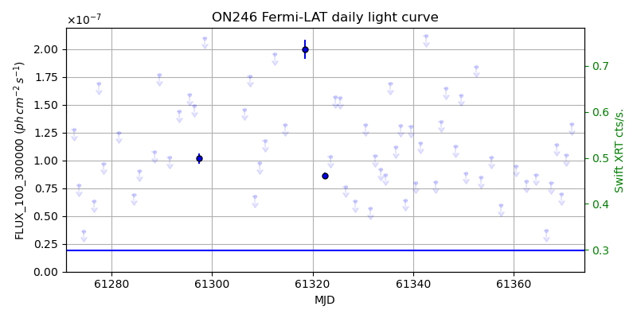
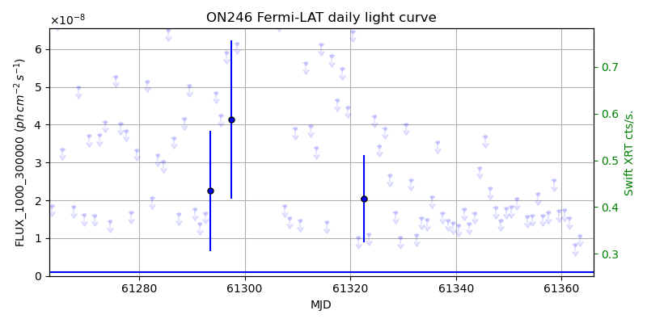
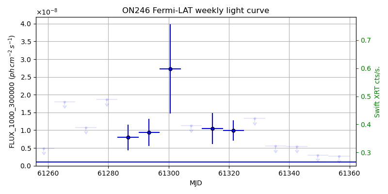

LAT Lightcurve site: https://fermi.gsfc.nasa.gov/ssc/data/access/lat/msl_lc/source/ON_246
Swift site: https://www.swift.psu.edu/monitoring/source.php?source=ON246
NED: Query
Time of last update of this page: UT: 2026-11-28 16:25 (MJD: 61372.684)
| Property | Value |
|---|---|
| R.A. | 12:30:14.16 |
| Dec. | 25:18:07.2 |
| z | 0.135 |
| 3FGL SpectrumType | PowerLaw |
| 3FGL PL Index | 2.24 |
| 3FGL Flux_100_300000 | 1.92e-08 1 / (s cm2) |
| 3FGL Flux_1000_300000 | 1.12e-09 1 / (s cm2) |
| 3FGL Flux >200 GeV | 1.60e-12 1 / (s cm2) |
| 3FGL Extrap. Crab >200 GeV | 0.01 |
| 3FGL Flux After EBL Absorption >200GeV | 9.50e-13 1 / (s cm2) |
| 3FGL EBL Crab Fraction >200GeV | 0.00 |

| MJD | dMJD | Flux | dFlux | Frac3FGL | FracCrab>200GeV | EBLFracCrab>200GeV |
|---|---|---|---|---|---|---|
| 61367.50 | 0.50 | 7.97e-08 | 0.00e+00 | 0.00 | 0.00 | 0.00 |
| 61368.50 | 0.50 | 1.14e-07 | 0.00e+00 | 0.00 | 0.00 | 0.00 |
| 61369.50 | 0.50 | 6.98e-08 | 0.00e+00 | 0.00 | 0.00 | 0.00 |
| 61370.50 | 0.50 | 1.05e-07 | 0.00e+00 | 0.00 | 0.00 | 0.00 |
| 61371.50 | 0.50 | 1.32e-07 | 0.00e+00 | 0.00 | 0.00 | 0.00 |
| MJD | dMJD | Flux | dFlux | Frac3FGL | FracCrab>200GeV | EBLFracCrab>200GeV |
|---|---|---|---|---|---|---|
| 61335.50 | 3.50 | 3.39e-08 | 0.00e+00 | 0.00 | 0.00 | 0.00 |
| 61342.50 | 3.50 | 8.00e-08 | 0.00e+00 | 0.00 | 0.00 | 0.00 |
| 61349.50 | 3.50 | 6.20e-08 | 0.00e+00 | 0.00 | 0.00 | 0.00 |
| 61356.50 | 3.50 | 1.19e-07 | 0.00e+00 | 0.00 | 0.00 | 0.00 |
| 61363.50 | 3.50 | 5.50e-08 | 0.00e+00 | 0.00 | 0.00 | 0.00 |

| MJD | dMJD | Flux | dFlux | Frac3FGL | FracCrab>200GeV | EBLFracCrab>200GeV |
|---|---|---|---|---|---|---|
| 61367.50 | 0.50 | 2.55e-08 | 0.00e+00 | 0.00 | 0.00 | 0.00 |
| 61368.50 | 0.50 | 2.22e-08 | 0.00e+00 | 0.00 | 0.00 | 0.00 |
| 61369.50 | 0.50 | 2.24e-08 | 0.00e+00 | 0.00 | 0.00 | 0.00 |
| 61370.50 | 0.50 | 9.06e-09 | 0.00e+00 | 0.00 | 0.00 | 0.00 |
| 61371.50 | 0.50 | 1.28e-08 | 0.00e+00 | 0.00 | 0.00 | 0.00 |

| MJD | dMJD | Flux | dFlux | Frac3FGL | FracCrab>200GeV | EBLFracCrab>200GeV |
|---|---|---|---|---|---|---|
| 61335.50 | 3.50 | 5.56e-09 | 0.00e+00 | 0.00 | 0.00 | 0.00 |
| 61342.50 | 3.50 | 5.48e-09 | 0.00e+00 | 0.00 | 0.00 | 0.00 |
| 61349.50 | 3.50 | 3.03e-09 | 0.00e+00 | 0.00 | 0.00 | 0.00 |
| 61356.50 | 3.50 | 2.70e-09 | 0.00e+00 | 0.00 | 0.00 | 0.00 |
| 61363.50 | 3.50 | 1.67e-09 | 0.00e+00 | 0.00 | 0.00 | 0.00 |
--------------------------------------------------------- Using user-supplied coords: 12:30:14.16 25:18:07.2 2000 --------------------------------------------------------- FLWO UT night of: 2026-11-29 Local Sid. @ Midnight: 04:08 Sunset (-15.0) (local, UT): 18:31 01:31 Sunrise (-15.0) (local, UT): 05:53 12:53 Moonrise (local, UT): 21:57 04:57 Moonset (local, UT): Moon phase: 0.72 --------------------------------------------------------- AzTime LSID UT Obj_el Obj_az Mn_el Mn_az Sep. --------------------------------------------------------- 18:31 22:39 01:31 -27.2 331.4 -32.9 32.1 52.1 19:01 23:09 02:01 -29.9 338.5 -29.4 38.9 51.8 19:31 23:39 02:31 -31.8 346.1 -25.4 45.0 51.5 20:01 00:09 03:01 -32.9 354.1 -21.0 50.6 51.2 20:31 00:39 03:31 -33.1 2.2 -16.2 55.6 50.9 21:01 01:09 04:01 -32.4 10.2 -11.1 60.2 50.6 21:31 01:39 04:31 -30.9 18.0 -5.4 64.5 50.3 22:01 02:09 05:01 -28.5 25.4 0.4 68.5 50.0 22:31 02:39 05:31 -25.4 32.2 5.8 72.2 49.8 23:01 03:10 06:01 -21.7 38.4 11.6 75.8 49.5 23:31 03:40 06:31 -17.5 44.1 17.5 79.4 49.3 00:01 04:10 07:01 -12.9 49.2 23.6 82.9 49.1 00:31 04:40 07:31 -7.8 53.9 29.7 86.5 48.9 01:01 05:10 08:01 -1.5 58.2 35.8 90.3 48.7 01:31 05:40 08:31 3.2 62.1 42.0 94.4 48.5 02:01 06:10 09:01 8.9 65.8 48.1 99.1 48.3 02:31 06:40 09:31 14.7 69.2 54.2 104.7 48.2 03:01 07:10 10:01 20.8 72.5 60.1 111.7 48.0 03:31 07:40 10:31 26.9 75.7 65.6 121.1 47.9 04:01 08:10 11:01 33.2 78.8 70.5 134.7 47.8 04:31 08:40 11:31 39.5 82.0 74.0 154.7 47.6 05:01 09:11 12:01 45.8 85.3 75.2 181.1 47.5 05:31 09:41 12:31 52.2 88.9 73.6 206.8 47.4 05:53 10:02 12:53 56.8 91.8 71.0 221.2 47.3 --------------------------------------------------------- Dark hours >55 deg.: 0.00